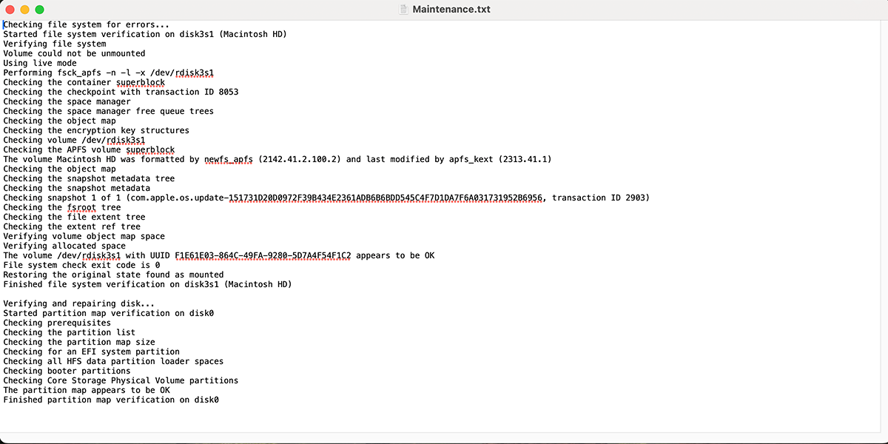

macOS updates
Lists available software updates and runs softwareupdate -ia --verbose. A restart may still be required afterward.
macOS Maintenance Automation
Maintenance automates a broad set of macOS update, cleanup, package-management, health, and disk checks, then generates a single HTML report on the Desktop.
Installation
Copy and paste this command into Terminal to install the Melding Software Mac scripts.
After reopening Terminal, type MeldingSoftware anytime to load the list.
curl -fsSL https://raw.githubusercontent.com/MeldingSoftware/Scripts/main/Mac/install.sh | bash
Because this command downloads and immediately runs a shell installer, you can review install.sh in the GitHub repository before executing it. Individual scripts may also request permissions, administrator access, Keychain authorization, Full Disk Access, or other macOS approvals depending on what the selected tool needs.
Documentation
Lists available software updates and runs softwareupdate -ia --verbose. A restart may still be required afterward.
Flushes dscacheutil and signals mDNSResponder.
Removes matching .0.gz and .bz2 archives from /private/var/log.
Uses tmutil thinlocalsnapshots with an approximately 10 GB thinning target when tmutil is available.
Documentation
If Homebrew is missing and Xcode Command Line Tools are available, the script can run Homebrew's official non-interactive installer.
It can install the mas command through Homebrew so Mac App Store apps can be upgraded.
Runs brew update, checks outdated formulae/casks, upgrades formulae and greedy casks, then performs brew cleanup.
Runs mas upgrade when mas is available; the user must already be signed into the App Store.
Documentation
Collects macOS version, uptime, battery state, disk free space, and a compact hardware profile.
Captures a top CPU/process sample plus memory_pressure output.
Runs diskutil list, verifies the root volume, reads selected disk0 SMART/device fields, and lists APFS snapshots.
Deletes contents under ~/Library/Caches and calculates a best-effort amount of space freed.
The script makes a best-effort attempt to quit major browsers before maintenance begins.
Documentation
A timestamped Maintenance_Report_*.html file is written to the Desktop.
The report organizes update, network, cleanup, dependency, system-health, package, App Store, disk, and cache tasks with captured excerpts.
At completion the generated report is opened with the macOS open command.
Screenshot

FAQ
The script is designed around one administrator-password entry at the beginning for its privileged tasks.
Yes, if Homebrew is missing and required prerequisites are available.
Yes. It runs softwareupdate -ia --verbose.
Yes. It removes the contents of ~/Library/Caches.
A timestamped Maintenance_Report HTML file is created on the Desktop.